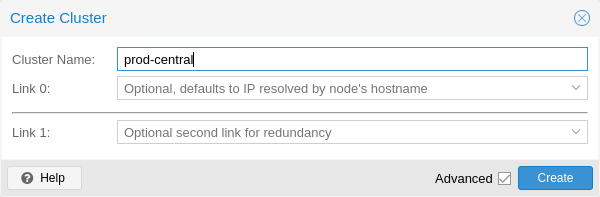

You can either create a cluster on the console (login via ssh), or through
the API using the Proxmox VE web interface (Datacenter → Cluster).
Use a unique name for your cluster. This name cannot be changed later. The cluster name follows the same rules as node names.

Under Datacenter → Cluster, click on Create Cluster. Enter the cluster name and select a network connection from the drop-down list to serve as the main cluster network (Link 0). It defaults to the IP resolved via the node’s hostname.
As of Proxmox VE 6.2, up to 8 fallback links can be added to a cluster. To add a redundant link, click the Add button and select a link number and IP address from the respective fields. Prior to Proxmox VE 6.2, to add a second link as fallback, you can select the Advanced checkbox and choose an additional network interface (Link 1, see also Corosync Redundancy).
Ensure that the network selected for cluster communication is not used for any high traffic purposes, like network storage or live-migration. While the cluster network itself produces small amounts of data, it is very sensitive to latency. Check out full cluster network requirements.
Login via ssh to the first Proxmox VE node and run the following command:
hp1# pvecm create CLUSTERNAME
To check the state of the new cluster use:
hp1# pvecm status
It is possible to create multiple clusters in the same physical or logical network. In this case, each cluster must have a unique name to avoid possible clashes in the cluster communication stack. Furthermore, this helps avoid human confusion by making clusters clearly distinguishable.
While the bandwidth requirement of a corosync cluster is relatively low, the latency of packets and the packets per second (PPS) rate is the limiting factor. Different clusters in the same network can compete with each other for these resources, so it may still make sense to use separate physical network infrastructure for bigger clusters.